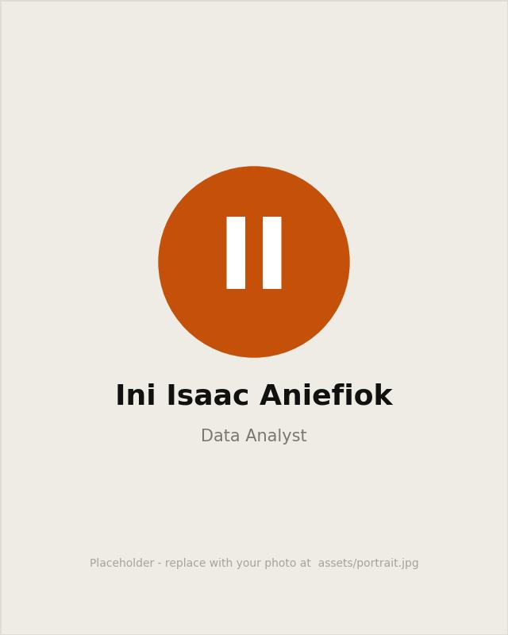

About
Meet Ini, a Chess lover, with a strong background in User Experience design. I'm a Data Analyst with proven expertise in problem-solving, research and analytics, systems design, EDA directed towards business growth and Machine Learning techniques. I help businesses uncover trends and insights from data for business strategy and growth.
I'm also a big lover of love and music, with a newly found interest in spoken words.

8
Live projects
8
GitHub repos
6
Industries